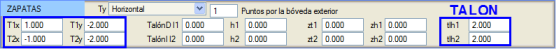
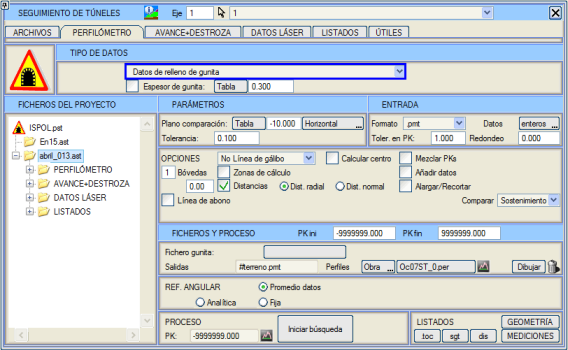
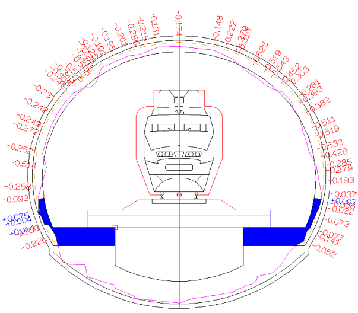

| |
|
TÜNEL İMALAT TAKİBİ. TOPUK
|
Tünel tasarımında topuk tanımlanmışsa ve imalat takibi püskürtme beton hattını içeriyorsa, topuğun dış yüzeyi püskürtme betona kadar yeniden oluşturulur ve bu metraj yeniden hesaplanır. Bu nedenle, tünel temelini parametrik olarak tanımlamamız gerekir: 
Tünel İmalat Takibi menüsünde yüklenecek veri püskürtme beton verisi olacaktır: 
Elde edilen sonuç TOPUK metrajıdır: 
Topuk metrajı, teorik topuk tabanının altında kazılan kısmı kapsar. Ayrı topuklu tüneller için, kazı teorik topuk radyesinin altındaysa, radyenin altındaki bu alan ayrıca Grobeton olarak ölçülür. |